|
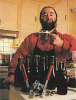 Illustrations by Kay Holmes Stafford Primary fermenter and Boiling Kettle |
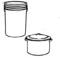 Secondary fermenter with fermentation lock |
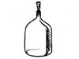 clockwise from left: hydrometer, siphon tube, thermometer. |
|
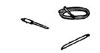 Stainless spoon and bottle capper. |
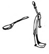 The basic ingredients in the home brewer's pantry are grains, yeast and pure water. |
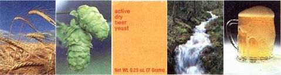 Fig. 11. Sterilizing the bottles |
|
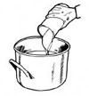 Fig. 3. Stirring the extract |
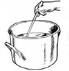 Fig. 4. Adding the hops |
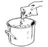 Fig. 5. Adding malt grain |
|
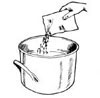 Fig. 6. Transferring to primary fermenter |
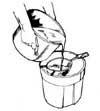 Fig. 7. Sparging the wort. |
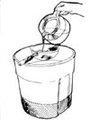 Fig. 8. Adding Yeast |
|
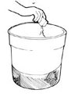 Fig. 9. Transferring to secondary fermenter |
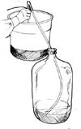 Fig. 10. Adding priming sugar |
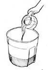 |
|
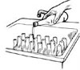 Fig. 12. Siphoning into bottles. |
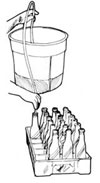 Fig. 13. Capping the bottles |
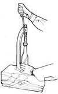 Fig. 14. Enjoying a home brew |
|
Byron's Irish-Style Stout is a real son-of-a-Burch. |
|
|